Same “diff lines” idea. 00 is the one you liked. Pick a letter (or stick with 00).
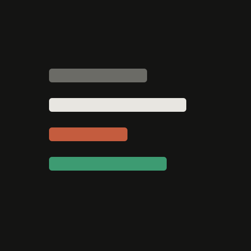
00-base-05Original 05 you liked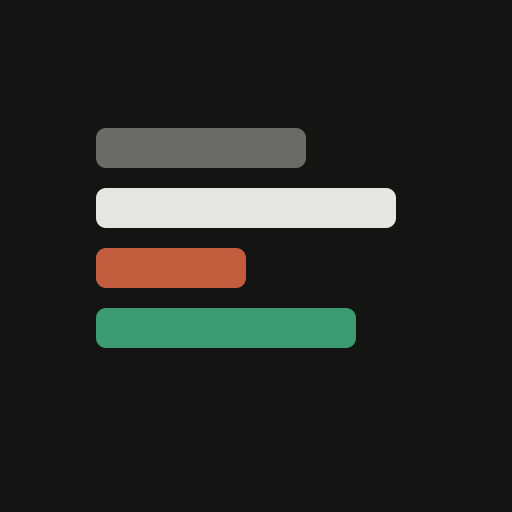
A-thickThicker bars, tighter stack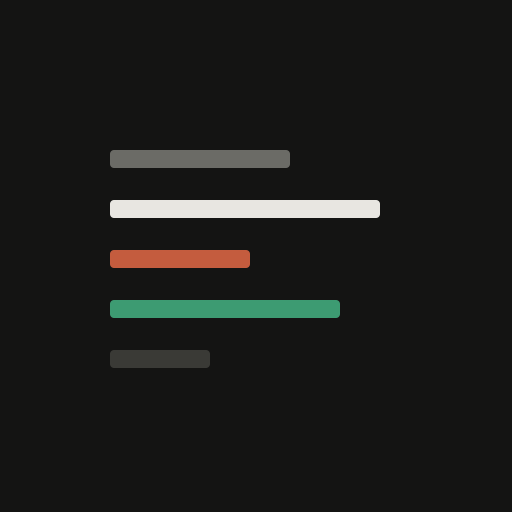
B-thinThinner editorial lines + extra muted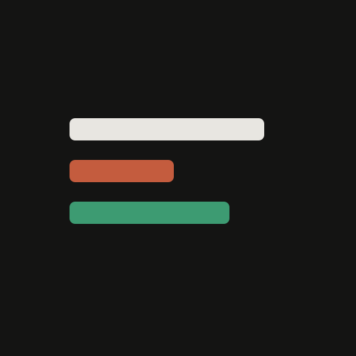
C-threeJust 3 lines — cream / remove / add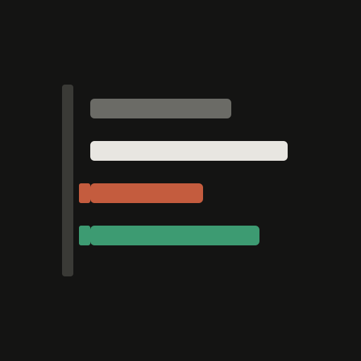
D-gutterDiff gutter ticks on the left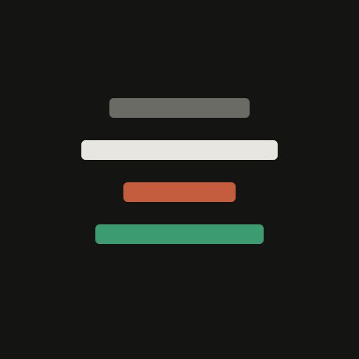
E-centeredCentered stack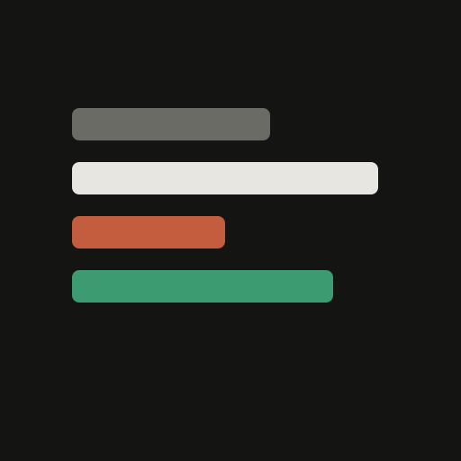
F-tightEdge-to-edge dense icon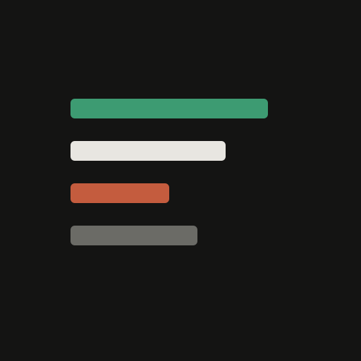
G-add-firstMint line on top (add-first)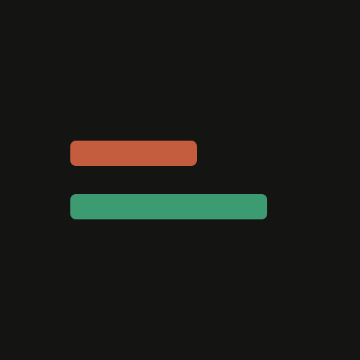
H-twoOnly remove + add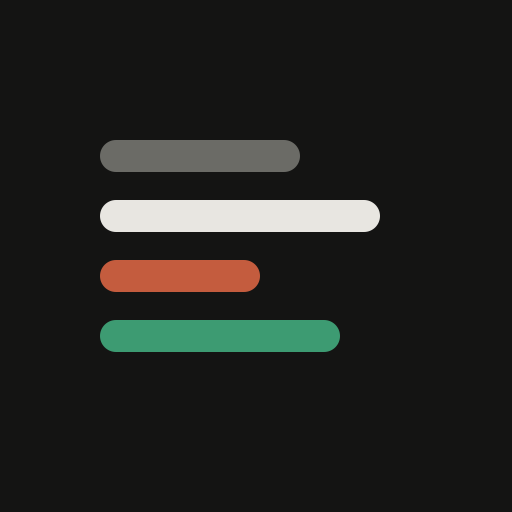
I-pillsPill-shaped ends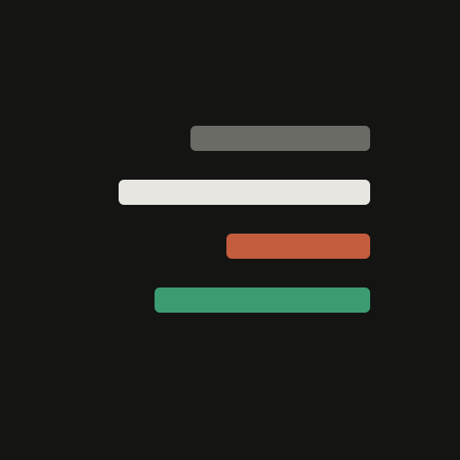
J-rightRight-aligned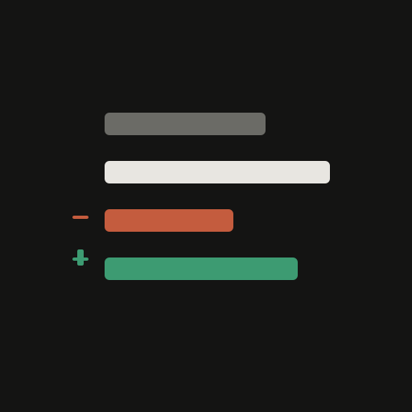
K-signedWith − / + ticks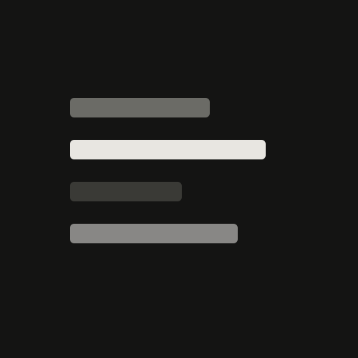
L-monoCream/muted only — no red/green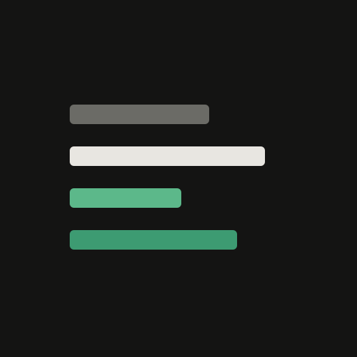
M-mint-creamNo red — mint + cream only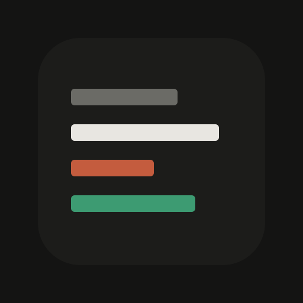
N-tileSoft rounded tile container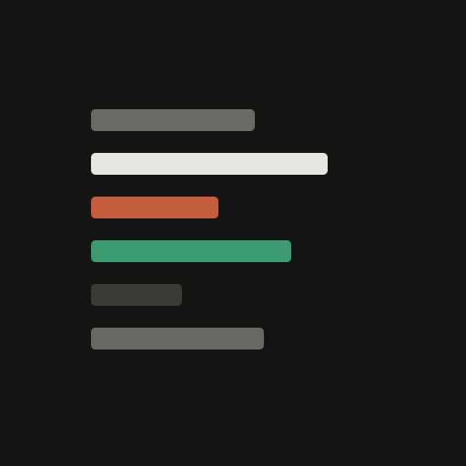
O-fiveDenser six-line block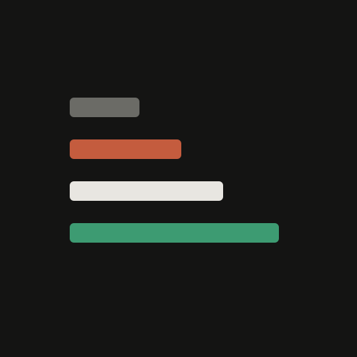
P-ascendingAscending lengths (lift story)